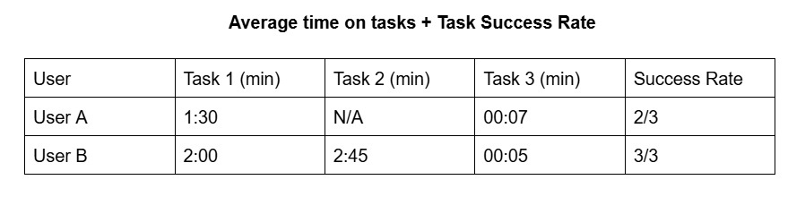

hci project

For CS 344: Human-Computer Interaction, Liam Keane, Kai Weiner and I are addressing the difficulty of navigating Carleton's music scene. Specifically, we are interested in how students can better connect with other like minded individuals to explore student organizations, form bands, and enjoy music together.
my prototype
After interviewing a Carleton musician, I found that potential users for our app would benefit from a streamlined source to access when/where music events are held, and a platform to know who on campus would be interested in meeting other musicians. For this reason, in the low fidelity prototype below, there is a page to browse events hosted by Carleton student organizations and a page to view profiles of different musicians on campus.

My team's final three requirements for our mid-fidelity prototype include having an events board, a musicians board, and a settings page to incorporate privacy in our design. The events board needs to provide users a streamlined source to stay up to date on what music events are occuring on campus. Similarly, the musicians board should allow students to promote their skills such that they can find other students to play with. Lastly, since we are designing a social media-esque platform, we need to consider what information students are comfortable with sharing. For this reason, we consider privacy settings to be a requirement for our prototype.
My prototypes address our three requirements in the following way: The browse events page allows users to view upcoming events, and find events by campus groups. This allows users to find events on campus from a single source, rather than needing to check a variety of ones. The musicians board is set up such that users can view a list of student musicians profiles. This allows users to find other people to play music with and know about their interests/intentions. Since different users have different comfort levels, in terms of what they would like to share online, I included a settings page so that students can enable/disable what information they want to share. I believe it's important that first names and class years are always visible to promote safety/accountability, but users can choose to hide their last name, profile picture, major, and email.
In terms of our UX research process, we conducted fictional inquiry sessions to better understand our stakeholders. After getting their input on what features they would be interested in and what difficulties they’ve experienced in navigating the Carleton music scene, we were able to shape our design to fit their needs. Specifically, we learned that students only typically find out about events through word-of-mouth or posters located around campus. This indicated a strong need for a more reliable and tactical method of finding music events to attend at Carleton.
After conducting this research, our analysis process consisted of axial-coding transcripts of our fictional inquiry sessions. This allowed us to find recurring themes shared between our stakeholders and gain a better understanding of their needs. We also created an affinity diagram to represent codes from our interviews and separated them based on emotional sentiments and specifically desired features.
For my interaction flows, I chose to allow users to continue as a guest so that users do not necessarily need to have a profile in order to view events and student musicians. This aids in privacy. For the events board, there is a flow that allows users to view events by student group. I also have a navigation footer to allow users to switch between all three pages to view the events board and musicians board.
final project
Click here to view my high fidelity Figma
Informal UX Metrics

User satisfaction quotes
- “Like I guess there's kind of an email here. Okay. I like that.” - A
- “But I also think that this is automatically color blind friendly already.” - A
- “Settings was the easiest page to find” - B
User disatisfaction quotes
- “I also think it could be helpful if they were organized in like upcoming to like after since I know the symphony main concert was before all of these. But it was at the end.” - A
- “How do you get out of this [browse events page]? - B
- “It was a little confusing. Because it was just a pic. It was just a symbol.” - A
- “Where's the back button?” - A
- “So the iconography is unclear.” … “yes” - Vanessa & A/B
- “But it says enable or disable. So is everything enabled right now? Or is everything disabled?” - A
Explanation
From my UX evaluation, I found that my second prototype was difficult to navigate due to having pages look fairly similar,and ambiguous iconography to denote different pages. Stakeholders also noted that they would prefer more ways to get out of pages in terms of the navigation process. On the other hand, they noted that the Settings page was easy to find, and the layout of the Browse Events and Find Musicians page didn’t need to be improved.
In terms of improvements, my prototype now better fits the needs of my stakeholders. For example, users noted that they would enjoy having a proper homepage that allows them to navigate to all other pages. I’ve now included a distinct homepage that is the first screen users can see after logging in. Users also noted that a calendar icon and a person icon would make more sense for representing the Browse Events and Find Musicians page. Users also wanted a filter system, so I also implemented a way to filter students on the Find Musicians page based on what instrument they play.
I had my users try three different tasks: First, I wanted them to browse events that are hosted by ensembles to see if they can find events based on category/student group. Next, I wanted them to visit the list of student musician profiles on the Find Musicians page. Lastly, I asked them to try to hide their last name on their profile by navigating to the settings page.
For my UX evaluation process, I completed a co-discovery session with two student musicians. I interviewed a drummer not very involved in the music scene and a french horn player involved in Symphony Band / lessons. They alternated between taking turns to complete a task, and completing them at the same time. My users also went off of each other’s feedback which created an environment for a healthy discussion.
In terms of future steps, users noted an interest in having more media and images on the app. I included some, but there could be a social media tab for students to upload images from events. The privacy element of the app could also benefit from being more robust (like adding a way to flag malicious users) because my users found that it was sparse. Specifically, they noted that it was missing a way to delete their profile.